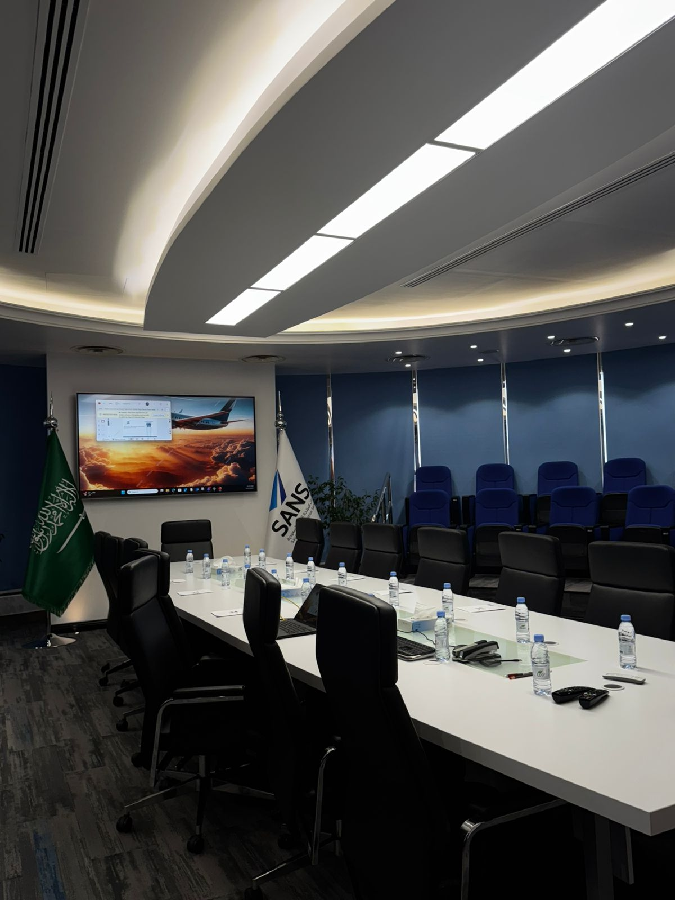
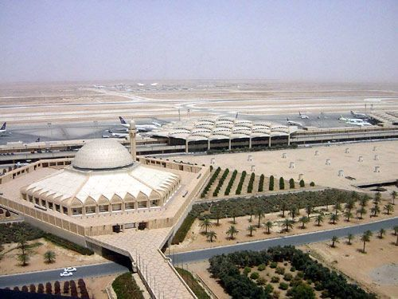

Airport Visit
A two-day field visit to King Khalid International Airport, where students gained real-world exposure to airport operations, including the control tower and operational centers.

Date
November 11-12, 2025
Location
King Khalid Airport
Category
Field Visit
About the Event
This field visit to King Khalid International Airport provided members of the Space & Aviation Club with a unique opportunity to experience airport operations firsthand over two days.
Students explored key areas within the airport, including the control tower and operational facilities, gaining insight into how airport systems function in real-world environments.
The visit also included informative sessions about airport operations and the history of King Khalid International Airport, helping students better understand the aviation industry beyond theoretical learning.
Overall, the visit offered valuable exposure to the professional aviation environment, bridging the gap between academic knowledge and real-world application.
Event Gallery
